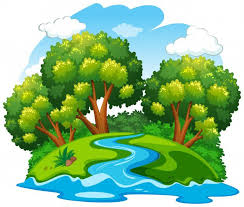
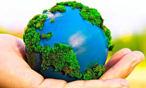

¿Qué es el Medio Ambiente? ¿Por qué nos debería importar? ¿Cuáles son las consecuencias de su degradación? ¿A quiénes afectaría?
El ambiente es todo aquello que nos rodea, que forma parte de nuestro entorno, comprende los elementos vivos (bióticos), como los animales y las plantas e incluye los elementos inanimados como el agua, el aire, el suelo, etc.
El ambiente sufre constantes cambios, el hombre transforma lo que nos rodea mediante actividades agrícolas, extractivas o industriales para suplir las necesidades básicas, pero también la naturaleza modela el paisaje, la lluvia, los vientos, el mar construye y destruye playas, las erupciones volcánicas destruyen extensas áreas, etc.
Constituyen problemas ambientales, aquellos que afecten de alguna forma a cualquiera de estos componentes vivos e inanimados como la pérdida de biodiversidad o especies vivas, deforestación, contaminación del agua, suelos y aire esto origina riesgos a la salud, pobreza, agotamiento de combustibles fósiles, etc.). La magnitud del daño ambiental depende de la intensidad y de si es reversible (acorto, mediano o largo plazo) o no.

Características del medio ambiente
Organismos: conjuntos de individuos de diferentes especies, tanto animales como vegetales, hacen lo propio hasta encontrar su espacio y establecer poblaciones.
Agua: tanto la presencia como la ausencia de este líquido vital, es algo que afecta de manera directa el equilibrio del medio ambiente, asimismo, corresponde a una sustancia clave para la subsistencia de los organismos.
Aire: a partir de la composición química de este elemento, es que se pueden identificar estados de contaminación. Por otra parte, este puede llegar a influir en la calidad del oxígeno que participa en la respiración.
Temperatura: esta magnitud que hace referencia al calor que se mide por medio de un termómetro, puede comprometer bastante el ambiente, consiguiendo que el aire se pueda percibir frío o caliente. Puesto que algunos organismos únicamente sobreviven dentro de ciertos rangos de temperatura, esta muchas veces puede ser sinónimo de deterioro.
Accidentes geográficos: se trata de las cosas que componen el relieve de una zona, por ejemplo, los valles y montañas.
Organismos vivos: Estos son pieza fundamental del medio ambiente, pues forman la acción directa en las alteraciones o mantenimiento de los procesos ambientales.

Geografía: La geografía o geología, se encarga de los movimientos de la tierra, sus fenómenos, pues los fenómenos como las erupciones, temblores y tsunamis tienen grandes cambios en el medio ambiente.
Deforestación: Esta afecta ampliamente, tanto por causas naturales (incendios, plagas, sequías etc.).
Sobre forestación: Este fenómeno, consiste en el exceso de un cierto tipo de plantas o sobrepoblación, que en un momento determinado producen grandes daños al ecosistema, como ahogar al resto de plantas, destrucción de ecosistemas y muerte de algunas especies.
Contaminación: La contaminación es un elemento artificial producido en forma consiente o tal vez inconsciente por el ser humano, aunque también se puede llegar a producir por fenómenos naturales como erupciones volcánicas y exhalación de gases químicos.
Recursos naturales: Los recursos naturales son los recursos de que dispone el ser humano para satisfacer sus necesidades económicas, sociales y culturales. Se pueden ordenar en:
Recursos naturales no renovables: son aquellos que tienen un tiempo para ser usados por una vez ya que se pierden para siempre. Por ejemplo: los minerales, el carbón y el petróleo.
Recursos naturales renovables: son aquellos que vuelven a surgir en la naturaleza a través de un ciclo, o por medio de forma natural. Por ejemplo: la flora, la fauna, el agua y el suelo.